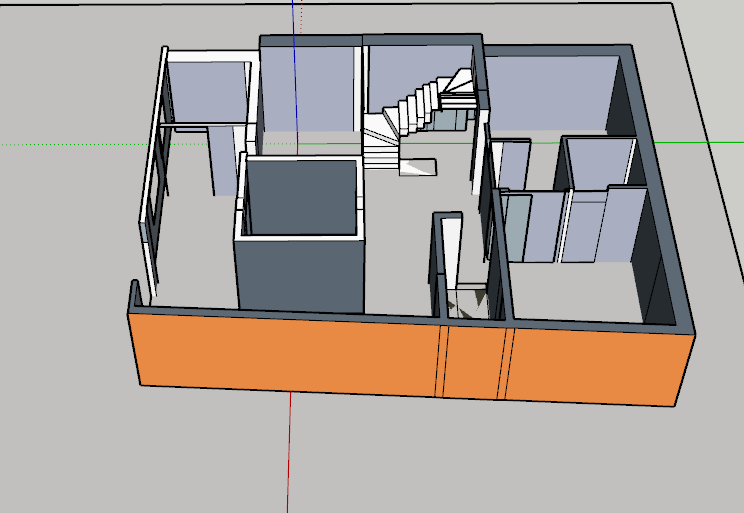

Hi, I'm Dammala Sirisha
An efficient and aspiring Civil Engineer passionate about utilizing my skills to contribute to a company's success.
View My WorkAbout Me
I am a dedicated and detail-oriented Graduate Bachelor of Technology in Civil Engineering from Pragati Engineering College. I have a strong foundation in designing using AutoCAD and possess key skills in logical thinking, communication, and problem-solving. I am eager to apply my knowledge in a progressive organization and continue to grow as a civil engineer.
My Design & Practice


3D Architectural Modeling
A 3D model of a residential building created using SketchUp. This project demonstrates spatial planning, form development, and realistic visualization from a 2D plan.


2D Floor Plan Drafting
A detailed 2D floor plan drafted using AutoCAD, demonstrating precision, proper dimensioning standards, space utilization, and efficient residential layout planning.
Experience & Skills
Core Skills
- Design Software: AutoCAD, Civil 3D, SketchUp
- Problem Solving: Strong analytical and logical thinking abilities.
- Communication: Proficient in conveying ideas and collaborating with teams.
Certifications
Civil 3D Certification
Certification of course completion in Civil 3D, showcasing an ability to learn diverse software tools for infrastructure design and analysis.
SketchUp Workshop
Participated in a workshop to develop skills in creating complex shapes by pushing and pulling 2D shapes into 3D forms for rapid visualization.
AutoCAD Certification
Successfully completed the prescribed course of study in both theory and practicals at NIT Computers, Kakinada, from 29 September 2025 to 14 November 2025. Demonstrated proficiency in AutoCAD drafting and design concepts and passed the course with an A Grade.
Extracurricular Activities
Workshop at JNTUV, Vizianagaram
Participated in a workshop at Jawaharlal Nehru Technological University Vizianagaram (JNTUV) . This event provided valuable insights into modern construction techniques and sustainable infrastructure, enhancing my practical knowledge and professional network.
Get In Touch
I'm actively seeking new opportunities and would love to hear from you. Feel free to connect or send me an email!
Email Me